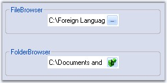

The ButtonEdit control embeds a text box control with a collection of button controls that can be customized to create many commonly used interfaces such as a file / folder browser or a drop-down text control. We can implement a file picker and folder browser using the ButtonEdit control. Drop-down popup controls can also be shown using the ButtonEdit control and the PopupContainerControl.
The edit control with a browse button extends a regular edit control by adding a button which can display an user-defined "browse" dialog. The ButtonEdit control provides an easy way to create controls with an edit control and any number of associated buttons.

Figure 162: ButtonEdit Control
The ButtonEdit control derives from Syncfusion.Windows.Forms.ContainerControl and embeds one or more ButtonEditChildButton controls. The ButtonEditChildButton controls derive from Syncfusion.Windows.Forms.Button class and expose the functionality of buttons.
Using an edit control alongside one or more button controls is a very common requirement in graphical user interface programming. Some of the common examples are browse edit controls and drop-down controls.
 Features
Features